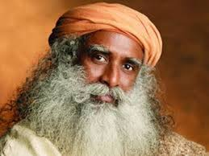

Peace with KRISHNA is the foundation for peace in every other area of our lives. We can have a lot of things in life, but if we don't have peace, we're never going to truly enjoy our lives the way KRISHNA intended. "Pursue" is a strong word. It requires action and doing whatever it takes to maintain peace in our lives. It means not always getting "our way" or having the last word in an argument. It requires us to trust KRISHNAd even more with the people in our lives. But it's all worth it.
Five amazing truths about KRISHNA's wisdom. 1. His Wisdom Is Available to Every Believer. 2. You Simply Need to Ask for the his Wisdom. 3. KRISHNA’s Word Is Full of His Wisdom. 4. The Wisdom of KRISHNA and the World’s Wisdom Are NOT the Same. 5. The Enemy Will Try to Distract You From the Wisdom of KRISHNA. Remember, if you seek the wisdom of KRISHNA, if you want to have it—then you can count on receiving it.
Abundance is frequently mentioned in the religious scriptures as something KRISHNA offers to those who trust in Him. Scripture says that KRISHNA will provide an abundant life to those who "seek first the kingdom of KRISHNA and his righteousness." Abundance in this sense means a life full of everything you need to sustain yourself in joy and purpose. Discover all of the best scripture quotes about abundance in this collection of religious verses.
Krishna's friends at Vribdavana
The birth in which Love, Knowledge and Mischief all come together is considered as the birth of Lord Krishna. Today, on Lord Krishna’s Birthday, all of you must take a Sankalpa to read the Bhagavad Gita. It would appear from reading the Srimad Bhagavatam that the times of the Lord were filled with fun, happiness, love and devotion. But, along with this there is a lot of vairagya (dispassion) as well. If you wish to understand dispassion, you should refer the Srimad Bhagavatam.
Sri Sri Ravi Shankar
Founder, Art of Living.
When we say Krishna, the essence of who he is, he is an irrepressible child, a terrible prankster, an enchanting flute player, a graceful dancer, an irresistible lover, a truly valiant warrior, a ruthless vanquisher of his foes, a man who left a broken heart in every home, an astute statesman and kingmaker, , a thorough gentleman, a yogi of the highest order, and the most colorful incarnation. To explore his path playfully, you need a heart full of love, a joyful mind, and a vibrant body.
Jaggi Vasudev-Sadhguru
Founder, Isha Foundation.
FIND US ON SOCIAL MEDIA
Krishna consciousness is both the process and attainment of the realization that every living being is an eternal servant of Krishna, and feeling Krishna is the most beloved.
CONTACT US
DurgaHari Sevashram, Mumbai
+ (022)-22561234
durgahari.sevashram@gmail.com
SUBSCRIBE NEWSLETTER
@ Copyright, Website degined by MKD Technology